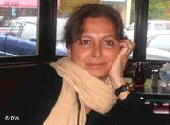

پذيرش > سایت نوشته ها > سکولاريسم و جنبش زنان در ايران
 متن ارائه شده از سوی مهرانگيز کار به گردهمايی جمهوری خواهان دمکرات و لائيک متن ارائه شده از سوی مهرانگيز کار به گردهمايی جمهوری خواهان دمکرات و لائيک

 سکولاريسم و جنبش زنان در ايران سکولاريسم و جنبش زنان در ايران
4 مهر 1387 - گویا / مهرانگيز کار - نسخه قابل چاپ
تغيير ناگهانی از حکومت دينی به يک حکومت سکولار به احتمال زياد به برابری و دموکراسی در ايران ياری نمی رساند. سکولاريسم در صورتی می تواند منشاء و مبنای حکومتی معتدل و متعادل بشود که نهادهای مدنی توانسته باشند پيش زمينه اين دگرگونی را فراهم کنند
متن ارائه شده در کنفرانس بين المللی درباره حقوق بشر و جدايی دين و دولت در ايران، به مناسبت گردهمايی جنبش جمهوری خواهان دمکرات و لائيک ايران در بروکسل
سکولاريسم با تعريف جدايی دين از دولت يکی از زير ساخت های سياسی و فکری ايران است. ايران دستکم در يکصد و پنجاه سال اخير صحنه حضور نيرومند گرايش به جدايی دين از دولت بوده است و در سال ۱۹۰۶ ميلادی که انقلاب مشروطه در اين کشور به پيروزی رسيده، ايرانيان اراده خود را بر تأسيس پارلمان و تصويب «قانون» توسط برگزيدگان خود اعلام داشتهاند. اين اراده در برخورد با اراده مراجع تندرو دينی طی سالهای ۱۹۰۶ تا ۱۹۷۹ (انقلاب اسلامی) گاهی به تزلزل گراييده و مجالس شورای ملی را به قانون گذاری بر پايه مبانی دينی بر انگيخته و گاهی اين مجالس توانستهاند گرايش جدايی دين و دولت را در مصوبات خود انعکاس دهند. در اين باره حق رأی و حق ورود زنان به پارلمان يک مورد مثال زدنی تاريخی است که نشان میدهد گرايش جدايی دين از دولت (سکولاريسم) و چالش بر سر آن، در تاريخ مشروطه به بعد، اغلب با حقوق زن و تنشهای بر آمده از آن پيوند خورده است. لذا میتوان در تاريخ سکولاريسم ايران، زن و بدن و حقوق انسانی او را در جای مهمترين نماد انتخاب کرد و به بررسی آن پرداخت. بررسی اين نماد به وقت ديگری موکول می شود.
متأسفانه انقلاب ۱۳۵۷ ناظران بينالمللی و مفسران را به اشتباه انداخت، به اندازهای که باور کردند ايران يکسره زير سلطه تفکری است که فقط از اختلاط دين و دولت جانبداری میکند. ناظران ، بسياری نکتههای باريک را در ماجرای انقلاب ايران از قلم انداختند:
۱- آيتالله خمينی رهبر انقلاب همواره تأکيد داشت بر اين که پس از سقوط نظام شاهنشاهی، وی به قم خواهد رفت و مديريت کشور را به افراد و گروههايی که شايسته مديريت کشور هستند خواهد سپرد. مردم به اين ميثاق اعتماد کردند و از آيتالله خمينی در جايگاه يک رهبر معنوی و نجات دهنده فرمان بردند.
۲- گرايش سکولاريسم در جريان انقلاب ۱۳۵۷ بيش از هميشه تاريخ ايران، در صحنه حاضر بود. اما نمیتوانست خود را در احزاب و تشکلهای نيرومند و مستقل و قانونی تعريف کند. نبود ابزارهای مهم دموکراتيک مانند مطبوعات آزاد و تشکلهای مستقل و احزاب نيرومند، سبب شد تا گرايش بخش بزرگی از جمعيت ايران که «سکولاريسم» و جدايی دين از دولت بود تبديل به يک نيروی سياسی سازمان يافته و مقتدر نشده و نتواند خود را شاخص کند. حال آن که در نبود احزاب نيرومند و مستقل سياسی، مساجد که در دوران محمد رضا شاه پهلوی تعدادشان بر حسب اراده شاهانه رو به فزونی داشت، تبديل به ستادهای حزبی شدند و از اين ستادهای حزبی و در نتيجۀ به هم پيوستن آنها در سطح کشور، گرايش بخشی از جمعيت آن روز ايران به اختلاط دين و دولت «سازمان يافته» شد و تبديل به گرايش غالب گرديد. هيجانات مذهبی و استفاده از نمادهای تشيع در گردهمايیهای انقلابی، رنگ تند مذهبی و شوريدگی سوگواریهای مذهبی را به انقلاب ايران که به صورت يک تابلو سياسی در برابر جهانيان گشوده شده بود افزود و به تدريج توانست افزودن پسوند اسلامی بر انقلاب ايران را توجيه کند.
۳- در انقلاب ايران به لحاظ بسيار دلايل تاريخی که در خودآگاه و ناخودآگاه مردم زنده بود، مبارزه با امپرياليسم جايگاه عمدهای داشت. انقلابيون با گرايش سکولار به اين مبارزه آن قدر بها میدادند که حاضر شدند به بهای تضعيف امپرياليسم، با رهبران دينی که توانسته بودند نيروی شگفت انگيز خود را در به ميدان آوردن مردم به رخ بکشند همسو و هم پيمان شده و غول استعمار را از پای درآورند. گرايش سکولار که فاقد سازماندهی و ستادهای حزبی و رهبران پر جاذبه و کادرهای مردمی بود و پيشينه کهن استبداد، آن را دچار تفرقه و آشوب و اختلاف کرده بود، به اميد رهايی، نيروهای پراکندۀ خود را در اختيار انقلابيونی گذاشت که به تدريج شعار «استقلال، آزادی، حکومت اسلامی» را جايگزين ديگر شعارها ساختند.
ميراثی که از استبداد نصيب سکولاريسم و شاخههای ملی و مارکسيستی و حتی ملی – مذهبیها (مسلمانان ميانه رو) شده بود و تفرقه و اختلاف و امتناع از اين که آينده سياسی کشور را به هيجان و غليان انقلابی ترجيح دهيم، همچنين شوريدگی مذهبی انقلابيون تندرو دينی که هماهنگ و سازمان يافته رهبری میشدند، گرايش سکولاريسم را به تدريج به حاشيه برد تا جايی که گرايش يا خود را در سازمانهای زيرزمينی و بعضاً مسلحانه تعريف کرد که بازتاب آن به زيان کل گرايش سکولار بود يا انزوا برگزيد و حاشيه امن را به حضور پر مخاطره ترجيح داد.
جريان سکولار (با مفهوم جدايی دين از دولت) در تمام ۳۰ سال اخير مانند يک جريان فعال و زنده در صحنه مناسبات اجتماعی، سياسی، فرهنگی ايران حضور داشته و خود را به هر زبان که توانسته تعريف کرده است. زير تيغ سانسور در مطبوعات خود را تعريف کرده، در سينما خود را به نمايش گذاشته، در تئاتر با مهارت بازی کرده، در سرودهای ملی اثر گذاشته، در ادبيات و موسيقی جاری شده و سرانجام اينک با يک نمونه به شدت ملموس و سياسی آن مواجه شده ايم. جريان سکولاريسم دارد خود را در جنبش زنان ايران تعريف میکند.
جنبش زنان بر «برابری» استقرار يافته و تأکيد بر ضرورت برابری حقوقی زن ومرد، درونمايه ای و خاستگاهی جز سکولاريسم ندارد. در حکومت دينی برابری زن و مرد ناممکن است. با اين وصف نبايد ادعا کرد که سکولاريسم تنها گرايش حاضر در صحنه جنبش زنان امروز ايران است. بی گمان ديگر گرايش ها در اين صحنه حضور دارند و ناديده گرفتن گرايش دينی خطای بزرگی است که هر گاه مرتکب آن بشويم، بيش از گذشته زيان می بينيم. صاحبان اين گرايش برخی تبعيض ها را بر پايه دين بر خود روا می دارند و برخی را برنمی تابند و تأکيد دارند بر اين که اسلام بسياری از تبعيض های عليه زنان را دستور نداده و آنچه در قوانين ايران وارد شده اثری است از مردسالاری حاکم بر جامعه.
آن دسته از فعالان سکولار که جنبش زنان را آراستهاند نيک می دانند که درونمایۀ جنبش، سکولاريسم است. برخی تمايل دارند فقط بر پايه ضوابط جهانی حقوق بشر جنبش را تقويت کنند. اما در جمع فعالان سکولار بسيارند کسانی که شرايط و اوضاع و احوال را درک کرده اند و در سايتهای اينترنتی خود از نظرات فقهايی استفاده می کنند که با برخی خواسته های آنها همسو شده اند. نتيجه يکی است. اگر دعوايی و اختلافی است بر سر انتخاب روش است، نه تغيير بنيادی در خواسته ای که زير عنوان «برابری» مطرح می شود. به علاوه در ايران امروز جمعی از زنان سکولار به چنان بالندگی فکری رسيده اند که می دانند مادام که بينش دينی مردم ايران (زن و مرد) نسبت به جنس زن اصلاح نشود، حتی با فرض دگرگونی قوانين، زنان همچنان زير سلطه ديدگاه تبعيض آميز ستمگران را تحمل می کنند. دستجات مختلف زنان که جنبش امروز را شکل داده اند، عموماً در شناسنامه شان پايبندی به سکولاريسم مشاهده نمی شود. اما راهی را که آغاز کرده اند، به اين هويت در دراز مدت جان می بخشند. هر گاه فعالان جنبش زنان از طيف دينی يا غير دينی بتوانند به کمک جمعی از فقها مفاهيم برابری را از متون دينی استخراج کنند کار بر فعالان زن آسان می شود و يک چنين رويدادی به جنبش و درونمايه آن که سکولاريسم است ياری می رساند. به مضحکه گرفتن شيوه هايی که فعالان با گرايش دينی در جنبش زنان به کار می برند چشم بستن بر واقعيات اجتماعی است.
در اينجا مجال برای به تفصيل سخن گفتن نيست. علاقمندم با احترام به تمام دستجات فعال در جنبش زنان ايران، دينی و سکولار، اين عقيده خود را بيان کنم که تغيير ناگهانی از حکومت دينی به يک حکومت سکولار به احتمال زياد به برابری و دموکراسی در ايران ياری نمی رساند. سکولاريسم در صورتی می تواند منشاء و مبنای حکومتی معتدل و متعادل بشود که نهادهای مدنی توانسته باشند پيش زمينه اين دگرگونی را فراهم کنند. اينکه با رويدادی خشونت آميز از جنس انقلاب يا کودتا يا حمله خارجی، حکومت سکولار بشود به آن مقصود که بيش از يک قرن است آن را دنبال می کنيم نمی رسيم. اما نياز به حمايت خارجی برای امنيت فعالان درون کشور و حفظ آنان در صحنه فعاليتهای اجتماعی مهمترين خواسته ای است که در محافل جهانی مطرح می کنيم. تأکيد داريم بر اين که لازم است وضعيت حقوق بشر در ايران و نظارت بر آن توسط جامعه جهانی و سازمان ملل متحد عمده بشود. اين مهمترين خواسته ما از دولتهای ديگر است.
جنبش زنان در جای يک نماد سکولار و تازه ترين جلوه از خواست ايرانيان برای برابری، مورد هجوم يک داوری نادرست امنيتی قرار گرفته و سعی بر اين بوده و هست که با سوء استفاده از خصمانه بودن روابط ايران و امريکا اين جنبش را در جای بخشی از سياست امريکا سرکوب کنند. ديگر جنبشها نيز که زيستگاهشان در مراکز دانشگاهی يا صنفی و کارگری است زير همين شکل از فشارهای امنيتی پياپی تضعيف می شوند.
بنابراين چنانچه محافل خارجی بخواهند شنونده آلام و دردهای سياسی و اقتصادی مردم ايران بشوند، لازم است به ايران ياری برسانند تا روابط ايران و امريکا رو به بهبود برود و فضايی در کشور ايجاد بشود که بر پايه آن نيروهای امنيتی نتوانند هر حرکتی را به بهانه همسويی با امريکا متوقف سازند.
مهرانگيز کار
سپتامبر ۲۰۰۸
بروکسل
گویا
ارسال به
بالاترین
،
توییتر
،
فریندفید
،
فیسبوک
در همين بخش :
 یک خبر تلخ؟ یک قانونشکنی؟ یک تصمیم بخشنامهای جدید؟ یک خبر تلخ؟ یک قانونشکنی؟ یک تصمیم بخشنامهای جدید؟
چرا بایست به سکسوالیته پرداخت؟ / نفیسه آزاد
آزارجنسی خانگی؛ «قربانی» نه، «نجات یافته»
زنان، بزرگترین بازندگان بهار عرب
سانسور از دیدگاه جنسیتی/الهه امانی
ديگر بخش ها :
طرح یک میلیون امضا
|
مقالات
|
سایت نوشته ها
|
اخبار
|
گزارش كمپين
|
گفت و گو
|
علیه سکوت
|
كوچه به كوچه
|
نامه های شما
|
گزارش ویژه
|
گفتگو با اعضا
|
ویژه سالگرد کمپین
|
تصویر برابری
|
دل آرام علی
|
تریبون
|
مقالات
|
تاریخ شفاهی
|
خارج از چارچوب
|
کتابخانه
|
درباره کمپین
|
کمپین در شهرها
|
کمپین در بند
|
صدای تغییر
|
ویژه 22 خرداد
|
لایحه حمایت از خانواده
|
گالری
|
عشا مومنی
|
امیر یعقوبعلی
|
خدیجه مقدم
|
راحله عسگری زاده و نسیم خسروی
|
پروین اردلان،جلوه جواهری، مریم حسین خواه، ناهید کشاورز
|
زینب پیغمبرزاده
|
سعیده امین، سارا ایمانیان، محبوبه حسین زاده، ناهید کشاورز و همایون نامی
|
احترام شادفر
|
نسیم سرابندی زاده،فاطمه دهدشتی
|
وبلاگ مهمان
|
پرونده خرم آباد
|
دستگیری ها
|
مریم مالک
|
پرستو اللهیاری
|
مهرنوش اعتمادی
|
سمیه رشیدی
|
Other Languages
|
همراهان
|
«فراخوان کمپین ده روز با بهاره هدایت»
| English
|